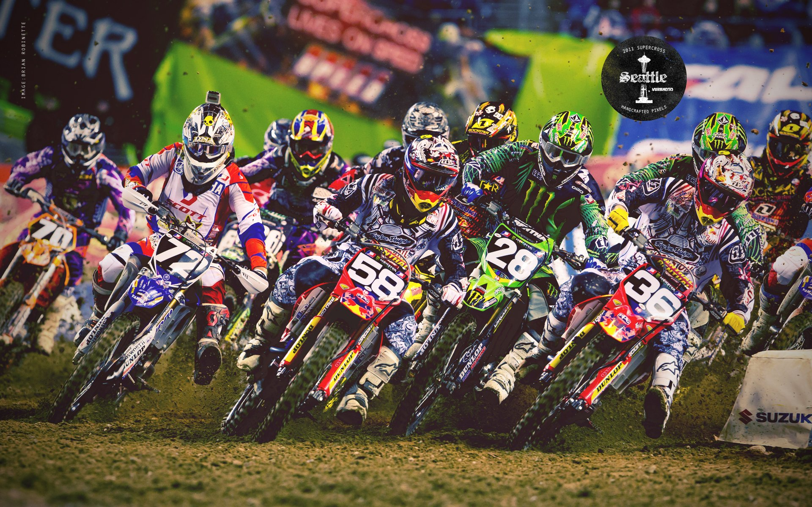

Кросс\эндуро – это класс мотоцлков в котором важна скорость, но не так, как умение преодолевать препядствиия, на грани возможностей мотоцикла, и своих как пилота. Некоторые чемпионы Мото кросса и Эндуро считают, что если ты умеешь ездить на кроссе\эндуро , то поедешь на все что имеет два колеса , да и еще так ,что все будут «глотать пыль».
